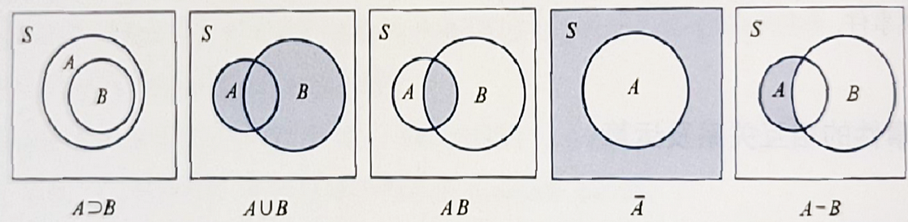

[1.x] 概率论的基本概念
样本空间与随机事件
随机试验(random experiment)的特点：
- 可以复现；
- 每次试验的结果不定，但事先可以知道试验的所有可能结果；
而随机试验的所有可能结果构成的集合为样本空间(sample space)，记为 $S$，其中的每一个元素为样本点(sample point)。
而样本空间的任一子集成为随机事件(random event)，简称事件。
- 特别的，只含有一个样本的子集称为基本事件。
事件的相互关系

从左到右分别：
包含 | 和事件 | 积事件 | 逆事件 | 差事件
- 两互逆事件又称对立事件。
- 若 $AB=\varnothing$，则称两事件不相容（或互斥）
- 若 $A\subset B \;and\;B\subset A$，则称两事件相等
其中，和、交、逆事件有如下运算规律：
- 交换律：$A\cup B=B\cup A\;,\;A\cap B=B\cap A$；
- 结合律：$A\cup(B\cup C)=(A\cup B)\cup C\;,\;A(BC)=(AB)C$；
- 分配律：$A(B\cup C)=(AB)\cup(AC)\;,\;(AB)\cup C=(A\cup C)(B\cup C)$；
- 对偶律 / 德摩根定律(De Morgan's law)：$\overline{\bigcup\limits^n_{j=1}A_j}=\bigcap\limits^n_{j=1}\overline{A_j}\;,\;\overline{\bigcap\limits^n_{j=1}A_j}=\bigcup\limits^n_{j=1}\overline{A_j}$；
串联系统与并联系统：
- 串联系统：$A=\bigcap\limits_{i=1}^nA_i$
- 并联系统：$A=\bigcup\limits_{i=1}^nA_i$
频率与概率
频率 = 频数 / 试验总次数
若样本空间 $S$ 中的任一事件 $A$，定义概率 $P(A)$ 满足以下三条公理：
- 非负性 $P(A)\geq0$；
- 规范性 / 正则性 $P(S)=1$；
- 可列可加性：对于 $S$ 中不相容的事件 $A_i$，有 $P(\bigcup\limits^{+\infty}{j=1}A_j)=\sum\limits{j=1}^{+\infty}P(A_j)$；
由此得到如下几条概率的性质：
- 对于有限个两两不相容的事件的和事件，有 $P(\bigcup\limits^n_{j=1}A_j)=\sum\limits_{j=1}^nP(A_j)$；
- $P(A)=1-P(\overline A)$；特别的，可以得到 $P(\varnothing)=0$；
- 当 $A\supset B$ 时，$P(A-B) = P(A)-P(B)$ 且 $P(A)\geq P(B)$；
- 概率的加法公式：$P(A\cup B)=P(A)+P(B)-P(AB)$；推广即容斥原理；
- 加法公式的推论：$P(A\cup B)\leq P(A)+P(B)$；
等可能概型
如果随机事件满足：
- $S$ 中样本点数有限；
- $\forall i,j \in{1,2,...,n},\;P(e_i) = P(e_j)$，即等可能；
则该试验问题为等可能概型（古典概型）
有如下性质：若总事件个数为 $N$，$A$ 为 $n$ 个基本事件的和事件，则 $P(A)=\frac{n}{N}$。
条件概率
如果 $P(B)>0$，那么定义在 $B$ 发生的条件下 $A$ 发生的条件概率(contidional probability)为：
$P(A|B)=\frac{P(AB)}{P(B)}$
条件概率是在新的样本空间下的概率度量，它满足概率的定义和性质。
定义完备事件组为 $S$ 的一个划分 $B_1,B_2,...,B_n$，它满足如下性质：
- $B_iB_j=\varnothing,i,j,...,n,i\not=j$；
- $\bigcup\limits^n_{i=1}B_i=S$；
设 $S$ 为一样本空间，$A$ 为该试验的事件，${B_i}$ 为 $S$ 的一个划分，则有：
- 若 $A_1,...,A_n,...$ 互不相容，则 $P(\cup_{n=1}^{\infty}A_n|B)=\sum\limits_{n=1}^{\infty}P(A_n|B)$；
- 乘法公式：当 $P(A)\not=0\;\,\;P(B)\not=0$ 时，有 $P(AB)=P(A)P(B|A)=P(B)P(A|B)$；
- 全概率公式：$P(A)=\sum\limits_{j=1}^nP(B_j)P(A|B_j)$；
- 贝叶斯公式：$P(B_k|A)=\frac{P(B_kA)}{P(A)}=\frac{P(B_k)P(A|B_k)}{\sum\limits_{j=1}^nP(B_j)P(A|B_j)}$；
- 其中，我们称 $P(B_j)$ 这种事先知道的概率为先验概率；而 $P(B_j|A)$ 这种，当事件 $A$ 发生后需要修正 $B_j$ 的概率成为后验概率。
事件独立性与独立试验
设 $A,B$ 为两个随机事件，若有 $P(AB)=P(A)P(B)$，则 $A,B$ 相互独立(independent)
其实际意义是，事件 $A$ 的发生与事件 $B$ 的发生互不影响。
那么就有结论：$while\;\;P(AB)=P(A)P(B)\;\;,\;\;P(A|B)=P(A)$；
当出现两个以上的随机事件时，如三个随机事件 $A,B,C$，当：
$P(AB)=P(A)P(B)\;,\;P(AC)=P(A)P(C)\;,\;P(BC)=P(B)P(C)$
都成立，则称事件 $A,B,C$ 两两独立；
如果同时还满足：$P(ABC)=P(A)P(B)P(C)$ 则称事件 $A,B,C$ 相互独立*。
- 显然有：相互独立 $\Rightarrow$ 两两独立
更普遍的：
定义 ${A_i}$ 相互独立当且仅当 $\forall{i_j},\;P(\prod_{j=1}^k A_{i_j})=\prod_{j=1}^kP(A_{i_j})$
独立试验与重复试验：
- 独立试验各个试验结果互不影响；
- 重复试验的每一次子试验都在相同情况下进行；